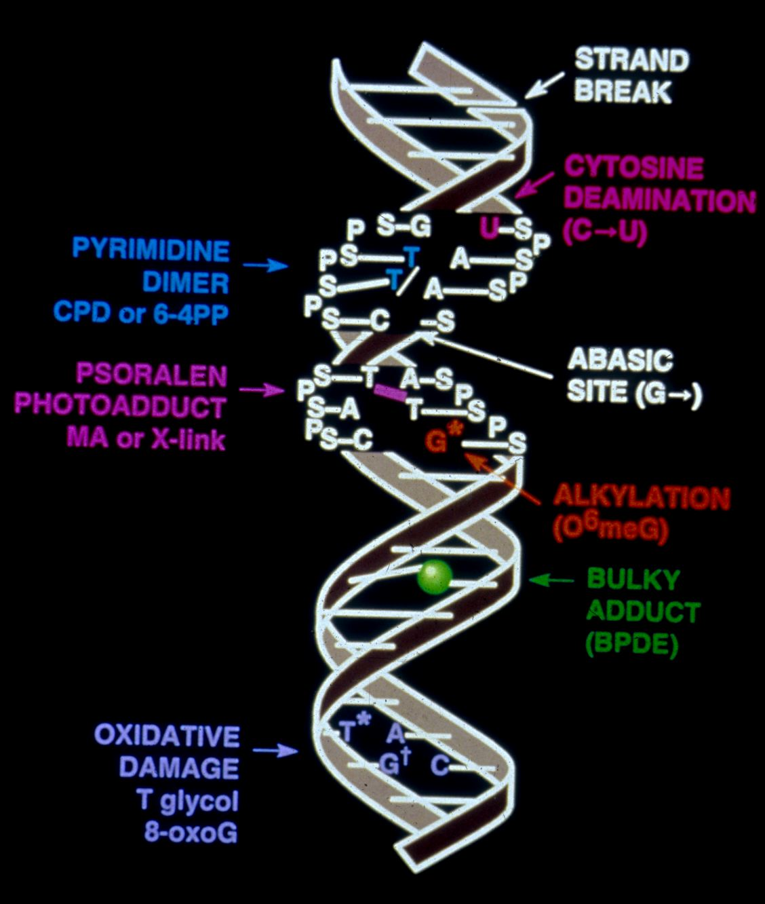

Thymineless
Death - What is it?
-
Thymineless death
(also known as TLD, TD, ThD, ThLD, ThyD, ThyLD, ThymD, and many other terms)
is the loss of viability (also known as death,
dying, destruction, eliminination. doom, turning the toes up to the daisies,
crossing the river, meeting an untimely end, perishing, etc.) in
growing cells when the availability of thymine is inhibited (this
is the scientific way of saying "when thymine is not available").
-
This phenomenon was first documented
in 1954 in the bacterium Escherichi coliby Cohen and Barner (1954)
who isolated a thymine requiring mutant and found that when starved for
thymine these cells die (see other terms
for death above).
-
Thymineless death can also be induced
by chemicals that inhibit thymine incorporation into DNA (e.g., cytosine
arabinoside) and thus ThD is likely the result of limiting the availability
of thymine.
Thymineless
death has been observed in all types of organisms including
-
Bacteria
-
Eukaryotes
-
yeast
-
Candida
-
human cells
Thymineless
death is accompanied by many events that are probably unpleasant to experience.
For example, in bacteria, ThyD is accompanied by the following:
-
the synthesis of a variety of proteins
(not sure why this would be unpleasant,
but someone else told me to put this here)
-
a decrease in RNA synthesis (RNA,
which unforunately does not contain thymine, is still reasonably important
and so decreasing its synthesis probably sucks)
-
accumulation of DNA strand breaks
(ouch!)
-
increase in the rate of mutation
(other than for superheroes, mutation is usually
not a pleasant thing)
-
increase in recombination (although
Justin Courcelle says this is probably just DNA replication)
-
colicin production
(if you cannot already tell from the name, colicins are not good things
to have)
-
prophage induction (while
this is much better than the amateur phage, it is still bad)
-
increase in DNA turnover (I
have had one, it did not taste very good)
Many
factors are required for TLD to occur. Thus it seems likely that thymineless
death can be prevented. Some of the required factors are:
-
RNA synthesis (thus
stopping RNA synthesis can stop ThymLD, but as mentioned above, RNA synthesis
is kind of important, so I do not recommend doing this without
trying other things first)
-
the ability to synthesize all amoni
acids not provided in the growth media (for
those who do not know, media means food)
-
a carbon source (I
have been trying to convince people to eat silicon for years, but nobody
seems to enjoy my special silicon smoothies)
-
active growth (it
is well established, that shorter people are much happier - no matter what
Jim Watson says - and therefore, keeping your children from growing can
prevent ThLD)
-
genetic factors
-
uracil glycosylase
-
some DNA replication genes
-
genes in the RecF pathway (recQ,
recF, recJand recO)but not recN